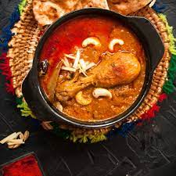

Chicken Qorma

About Chicken Qorma
Qorma is a dish originating in the Indian subcontinent, consisting of Chicken meat braised with yogurt (dahi), water or stock, and spices to produce a thick sauce or gravy.
Go Back